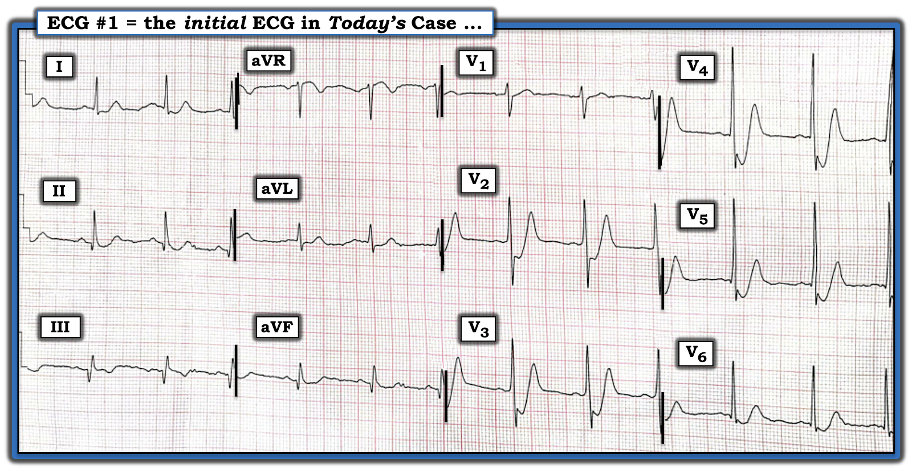
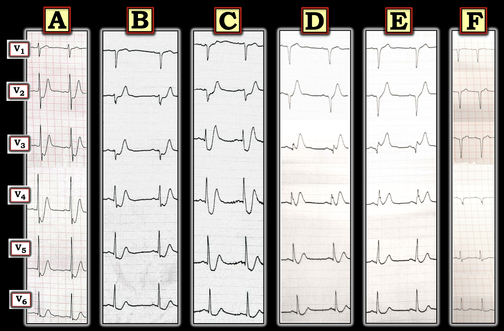
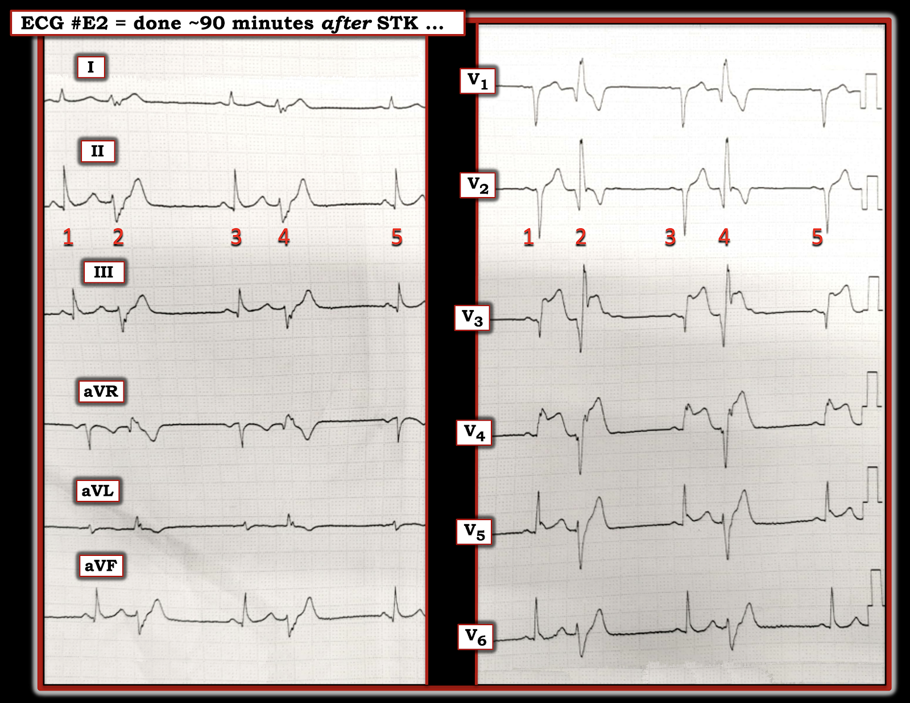

ECG Blog #340 — Một diễn tiến đáng ghi nhớ
Điện tâm đồ trong Hình-1 được ghi tại một phòng khám chăm sóc ban đầu — từ một bệnh nhân đến khám vì đau ngực mới khởi phát.
- BẠN sẽ diễn giải điện tâm đồ trong Hình-1 như thế nào?
- Đây có phải là tăng kali máu (hyperkalemia)? — hay có một “động mạch thủ phạm” (culprit artery)?


SUY NGHĨ CỦA TÔI về điện tâm đồ #1:
Dù chắc chắn tôi sẽ lấy máu xét nghiệm để xác nhận K+ huyết thanh bình thường — tôi rất nghi ngờ rằng bản ghi trong Hình-1 là tăng kali máu, vì:
- Bệnh nhân này đến một phòng khám ngoại trú với bệnh sử đau ngực mới khởi phát. Đây là một biểu hiện không điển hình của tăng kali máu cấp.
- Dù sóng T cao và nhọn (nhọn đỉnh) với đáy hẹp ở một số chuyển đạo trước tim — lại có điểm J chênh xuống kèm ST chênh xuống rất rõ ở từng chuyển đạo này (đây không phải là dấu hiệu được chờ đợi của tăng kali máu).
- Hình ảnh điện tâm đồ ở 6 chuyển đạo chi hoàn toàn không giống tăng kali máu.
Thay vào đó — bệnh sử và hình ảnh điện tâm đồ trong Hình-1 rất gợi ý ACS (hội chứng vành cấp — Acute Coronary Syndrome) — nhiều khả năng nhất là OMI (nhồi máu cơ tim do tắc — Occlusion-based Myocardial Infarction) cấp. Tôi thấy như sau:
- Nhịp xoang, tần số ~70/phút. Mọi khoảng (PR, QRS, QTc) và trục mặt phẳng trán đều bình thường. Không lớn buồng tim.
Về Thay đổi Q-R-S-T:
- Sóng Q: Cả 3 chuyển đạo dưới (II,III,aVF) đều có sóng Q (nhất là ở chuyển đạo III và aVF) khá lớn — khi so với biên độ sóng R ở chính các chuyển đạo đó. Các sóng Q này gợi ý nhồi máu thành dưới vào một thời điểm nào đó (xem bên dưới). Ngược lại — các sóng q rất nhỏ và hẹp ở chuyển đạo trước tim bên V5 và V6 nhiều khả năng nhất là “sóng q vách bình thường”.
- Tăng tiến sóng R (R Wave Progression): Có vùng chuyển tiếp sớm ở điện tâm đồ #1 — với sự xuất hiện đột ngột (ngay từ chuyển đạo V2) của một sóng R cao ít nhất bằng độ sâu của sóng S. Sau đó — biên độ sóng R tiếp tục tăng phù hợp, đạt biên độ đỉnh ở chuyển đạo V4,V5.
Về Thay đổi sóng ST-T:
Các bất thường điện tâm đồ nổi bật nhất ở điện tâm đồ #1 liên quan đến thay đổi ST-T.
- Như đã nêu — sóng T cao và nhọn, đáy hẹp, ở ít nhất 4 (nếu không muốn nói là 5) chuyển đạo trước tim (tức là ở chuyển đạo V2 đến V5 — có thể cả chuyển đạo V6).
- Mỗi chuyển đạo có sóng T cao, nhọn đều biểu hiện điểm J chênh xuống kèm ST chênh xuống rất rõ (từ 3 đến 5 mm ở chuyển đạo V2 đến V5).
- LƯU Ý: Có khía điểm J nổi bật ở chuyển đạo V3,V4,V5 (và kín đáo hơn ở chuyển đạo V6) — kèm đoạn ST dốc xuống “đập vào mắt” ở những chuyển đạo trước tim có ST chênh xuống.
- Ngược lại — thay đổi ST-T ở chuyển đạo chi trông ít cấp tính hơn nhiều. Có gợi ý ST dạng vòm (coving) kèm sóng T đảo ngược ở chuyển đạo III — nhưng không có ST chênh lên. Các chuyển đạo chi khác cho thấy ST dẹt không đặc hiệu, với ST chênh xuống nhẹ ở chuyển đạo I và aVL — nhưng không hề ở mức độ như ở các chuyển đạo trước tim.
Tổng Hợp Lại Tất cả:
Như đã nhấn mạnh — Với bệnh sử đau ngực mới khởi phát — và — hình ảnh điện tâm đồ trong Hình-1 — Chúng ta cần coi là OMI cấp cho đến khi chứng minh được điều ngược lại! Ngoài kết luận hiển nhiên này — tôi thấy có một số đặc điểm thú vị liên quan đến bản ghi này:
- Tôi không biết động mạch “thủ phạm” là gì từ bản ghi ban đầu trong Hình-1. Sóng Q lớn ở các chuyển đạo dưới — cùng vùng chuyển tiếp sớm đột ngột ở các chuyển đạo trước tim — gợi ý mạnh rằng đã có nhồi máu dưới-sau vào một thời điểm nào đó. Nhưng NẾU tổn thương cơ tim ở 2 vùng giải phẫu này đều là "mới" — thì sự khác biệt về mức độ cấp tính gợi ý bởi dấu hiệu ST-T ở chuyển đạo chi so với chuyển đạo trước tim cho thấy có sự chênh lệch về thời điểm (vì dấu hiệu ở chuyển đạo chi trông ít cấp tính hơn nhiều so với các dấu hiệu ST-T rõ rệt hơn hẳn ở các chuyển đạo trước tim).
- Các khả năng khác: Nhồi máu dưới-sau có thể là cũ — và các dấu hiệu ST-T ở chuyển đạo trước tim có thể là giai đoạn sớm của một dạng cấp, đang diễn tiến, của sóng T de Winter (deWinter T Waves) (xem ECG Blog #183). Hoặc — điện tâm đồ #1 có thể phản ánh một hình thái khác của bệnh nhiều nhánh mạch vành.
- ĐIỀU CỐT LÕI: Dù (các) mạch "thủ phạm" rốt cuộc là gì — Cần can thiệp cấp! Lý tưởng nhất — thông tim sớm để xác định giải phẫu và định hướng điều trị. Hoặc — có thể bắt đầu tiêu sợi huyết cấp.
DIỄN TIẾN CỦA CA:
Bệnh nhân được điều trị bằng Streptokinase. Để minh họa, trong Hình-2 — tôi đã gom diễn tiến thay đổi QRST bằng cách chỉ tập trung vào các chuyển đạo trước tim qua 6 bản ghi điện tâm đồ liên tiếp.
- LƯU Ý: Các bản ghi chuyển đạo chi qua 6 điện tâm đồ liên tiếp này không cho thấy bất kỳ diễn tiến thay đổi ST-T nào ở các chuyển đạo dưới. Nhồi máu thành dưới là cũ.


Diễn tiến các chuyển đạo trước tim qua 6 điện tâm đồ liên tiếp:
Để rõ ràng — Hình-2 so sánh các thay đổi trên điện tâm đồ liên tiếp ở các chuyển đạo trước tim qua 6 bản ghi. Thời điểm của 6 bản ghi này như sau:
- Ô A: T = 0 (tức là Đây là các chuyển đạo trước tim lấy từ điện tâm đồ ban đầu trong ca hôm nay — bản 12 chuyển đạo đầy đủ được trình bày ở Hình-1).
- Ô B: T = 1 giờ (các chuyển đạo trước tim từ điện tâm đồ đầu tiên ghi khi bệnh nhân đến khoa cấp cứu (ED)).
- Ô C: T = 2 giờ (từ điện tâm đồ ghi ngay trước khi dùng STK).
- Ô D: T = 2 giờ 45 phút (ghi ngay sau khi truyền xong STK).
- Ô E: T ~ 4 giờ (ghi ~ 1 giờ sau STK).
- Ô F: T ~ 12 giờ (bệnh nhân chỉ còn đau ngực rất ít).
SUY NGHĨ CỦA TÔI về Hình-2:
Đáng tiếc — tôi không có được điểm mức độ đau ngực tương ứng với từng bản ghi trong Hình-2. Tuy vậy — tôi thấy diễn tiến thay đổi QRST ở các chuyển đạo trước tim của 6 bản ghi liên tiếp này thật đáng chú ý và giàu tính gợi mở về một biến thể khác của sóng T kiểu de Winter (deWinter-like T Waves) (xem ECG Blog #183 và Blog #318 để biết thêm về sóng T kiểu de Winter).
Ô A (T = 0):
- Các chuyển đạo trước tim ở điện tâm đồ ban đầu của ca hôm nay cho thấy rõ điểm J chênh xuống kèm ST chênh xuống và sóng T nhọn đỉnh có thể rõ rệt đến mức nào trong giai đoạn rất sớm của sóng T de Winter.
- Thay vì một đoạn ST chỉ dốc lên dẫn vào sóng T de Winter rất cao — đoạn ST trong thực thể này lúc đầu có thể dốc xuống, như ở đây.
- Hãy chú ý khía điểm J nổi bật như thế nào ở khởi đầu của ST chênh xuống rõ rệt ở chuyển đạo V3,V4,V5 (và ở mức độ ít hơn ở chuyển đạo V6). Tôi tin rằng các sóng ở điểm J phóng đại này là sóng Osborn do thiếu máu cục bộ — nhỏ dần khi ca bệnh diễn tiến, cuối cùng biến mất ở Ô C (xem Bình luận của tôi ở cuối trang trong bài ngày 22 tháng 11 năm 2019 trên Dr. Smith's ECG Blog).
Ô B (T = 1 giờ):
- Chỉ 1 giờ sau — bản ghi này nổi bật với sự mất biên độ sóng R ở các chuyển đạo trước! Độ nổi bật của sóng J và mức ST chênh xuống giảm đi nhiều. Dù chiều cao tuyệt đối của các sóng T cao không khác mấy so với ở Ô A — nhưng khi xét đến biên độ sóng R đã giảm nhiều — các sóng T ở chuyển đạo trước tim này đầy đặn hơn ở đỉnh — rộng hơn ở đáy — và giờ đây mất cân xứng (quá lớn về thể tích — hypervoluminous) hơn hẳn so với QRS ở từng chuyển đạo tương ứng. Đây là các sóng T tối cấp của một hình ảnh de Winter đang tiến triển do tắc LAD (động mạch liên thất trước — Left Anterior Descending) cấp đang diễn ra.
Ô C (T = 2 giờ):
- Một giờ sau nữa (ngay trước khi bắt đầu Streptokinase) — có bằng chứng kín đáo về diễn tiến thêm, ở chỗ: i) Khía điểm J do thiếu máu cục bộ không còn thấy nữa; và, ii) ST chênh xuống dốc xuống đã được thay bằng một đoạn ST đi lên dốc hơn, lên nhanh, vươn tới đỉnh là sóng T cao. Đây là sóng T de Winter điển hình.
Ô D (T = 2 giờ 45 phút):
- Hình ảnh điện tâm đồ ngay sau khi truyền xong Streptokinase này không đáng khích lệ. Biên độ sóng R ở các chuyển đạo trước tim tiếp tục giảm chung. ST chênh xuống giờ chỉ còn rất ít — nhưng sóng T đồ sộ so với sóng R ở chuyển đạo V2, V3, V4. Đáng tiếc — tôi không có thông tin đối chiếu sự hiện diện và mức độ đau ngực trước, trong và ngay sau khi truyền Streptokinase — nhưng có vẻ như kết quả tiêu sợi huyết tốt nhất cũng chỉ là chưa tối ưu.
Ô E (T ~ 4 giờ):
- Khoảng 1 giờ sau khi truyền xong Streptokinase — giờ đã thấy rõ ST chênh lên chắc chắn ở chuyển đạo V3. Việc ST chênh lên này lan tỏa và đang tăng dần — thể hiện rõ trên điện tâm đồ 12 chuyển đạo ở Hình-3, ghi 30 phút sau đó (tức là khoảng 90 phút sau khi truyền xong Streptokinase).
Ô F (T ~ 12 giờ):
- Bằng chứng cuối cùng của tiêu sợi huyết thất bại thấy ở bộ chuyển đạo trước tim sau cùng — ghi vào ngày hôm sau. Giờ đã thấy phức bộ QS ở chuyển đạo V1 đến V4 (tương phản rõ rệt với các sóng R cao cùng vùng chuyển tiếp sớm có ở Ô A). ST-T đã trở về đường nền — nhưng chưa lúc nào thấy "sóng T tái tưới máu". Bệnh nhân đã mất một lượng cơ tim đáng kể.
Điện tâm đồ trong Hình-3:
Tôi đặt nhãn điện tâm đồ 12 chuyển đạo trong Hình-3 là điện tâm đồ #E2, vì bản ghi 12 chuyển đạo này được ghi ~30 phút sau 6 chuyển đạo trước tim ở Ô E của Hình-2 ( = khoảng 90 phút sau khi truyền xong Streptokinase).
- Dù không có dải nhịp dài liên tục — có vẻ như có một nhịp đôi trong Hình-3.
- Cứ cách một nhát lại có một nhát rộng — mang hình thái RBBB/LAHB — và không có sóng P đến sớm đi trước. Vì vậy — tôi nghi nhịp này là nhịp đôi thất, với nhát #2 và #4 ở cả chuyển đạo chi lẫn chuyển đạo trước tim là PVC phân nhánh (fascicular PVC) xuất phát từ phân nhánh trái sau.
- Ý nghĩa lâm sàng của PVC phân nhánh cũng giống như ý nghĩa của PVC xuất phát từ cơ tim thất. Trong bối cảnh lâm sàng của ca hôm nay (tức là tắc LAD diện rộng với tiêu sợi huyết chưa tối ưu, nếu không muốn nói là "thất bại") — ngoại tâm thu thất thường xuyên gợi ý thiếu máu cục bộ đang tiếp diễn.
- Lưu ý ở điện tâm đồ #E2 (ghi ~90 phút sau khi truyền xong Streptokinase) — có sóng Q ở các chuyển đạo trước + ST chênh lên dai dẳng ở chuyển đạo V2 đến V5 (với ST chênh lên rõ rệt ở chuyển đạo V3,V4).
- Như một điểm để dạy học — Lưu ý rằng ST chênh lên quá mức cũng có ở các PVC phân nhánh. ĐIỂM THEN CHỐT (PEARL): Đôi khi — nhồi máu cơ tim cấp có thể được chẩn đoán nhờ ST chênh lên bất thường ở PVC (trong khi không có ở bất kỳ chuyển đạo nào trong 12 chuyển đạo chuẩn). Vì vậy — nên thường quy đánh giá các ngoại tâm thu thất xem có ST chênh lên bất thường hay không, nhất là khi các chuyển đạo chuẩn không cho chẩn đoán xác định.
- ĐIỀU CỐT LÕI: Ca hôm nay minh họa một biến thể khác của sóng T kiểu de Winter — cho thấy diễn tiến ST-T qua 6 bản ghi chuyển đạo trước tim liên tiếp — với kết cục đáng tiếc là tiêu sợi huyết chưa tối ưu (nếu không muốn nói là thất bại hoàn toàn), cuối cùng mất biên độ sóng R rất rõ ở bộ chuyển đạo trước tim sau cùng (Ô F trong Hình-2).


==================================
Lời cảm ơn: Xin cảm ơn Eelin Siow và Kianseng Ng (từ Malaysia) đã chia sẻ ca bệnh và bản ghi này.
==================================
Các bài ECG Blog liên quan đến ca hôm nay:
- ECG Blog #205 — Ôn lại Cách tiếp cận hệ thống của tôi trong đọc điện tâm đồ 12 chuyển đạo (tóm tắt trong Hình-2 và -3, và là chủ đề của Audio Pearl MP-23 trong Blog #205).
- ECG Blog #193 — minh họa cách dùng nghiệm pháp soi gương (mirror test) để giúp nhận ra nhồi máu cơ tim thành sau cấp. Bài này ôn lại những điều cơ bản để dự đoán động mạch "thủ phạm". LƯU Ý: Pearl Audio ôn lại lý do vì sao thuật ngữ "OMI" ( = nhồi máu cơ tim do tắc — Occlusion-based MI) nên thay thế thuật ngữ quen thuộc hơn là STEMI.
- ECG Blog #194 — Ôn lại cách nhận biết LIỆU động mạch “thủ phạm” (tức là bị tắc cấp) đã tái tưới máu hay chưa, dựa vào dữ liệu lâm sàng và điện tâm đồ.
- ECG Blog #80 — Ôn lại cách xác định động mạch "thủ phạm" và áp dụng nghiệm pháp soi gương để nhận ra nhồi máu cơ tim thành sau cấp.
- ECG Blog #248 — Ôn lại một ca minh họa các nguyên nhân gây sóng R cao ở chuyển đạo V1 (với Audio Pearl trong bài này dành riêng cho chủ đề này).
- ECG Blog #184 — minh họa mối quan hệ đối nghịch soi gương "kỳ diệu" khi thiếu máu cục bộ cấp giữa chuyển đạo III và chuyển đạo aVL (được trình bày trong Audio Pearl #2 của bài này).
- ECG Blog #262 — Ôn lại một ca nhồi máu cơ tim dưới-sau cấp gần đây, có nhịp theo nhóm do dẫn truyền Wenckebach và điện thế thấp (kèm danh sách các nguyên nhân gây điện thế thấp).
- ECG Blog #266 — Ôn lại một số điểm cần cân nhắc khi phân biệt sóng T de Winter với nhồi máu cơ tim thành sau.
- ECG Blog #183 — Ôn lại một ca sóng T de Winter (với Audio Pearl trong bài này bàn về một số biến thể của hình ảnh sóng T de Winter).
- ECG Blog #53 — Ôn lại một ca khác về sóng T de Winter.
- ECG Blog #318 — Trình bày một biến thể khác của sóng T kiểu de Winter — và — Ôn lại (và minh họa) khái niệm T-QRS-D (biến dạng phần cuối QRS — Terminal-QRS-Distortion).
- ECG Blog #215 — Ôn lại một ca có T-QRS-D.
- ECG Blog #218 — Ôn lại CÁCH xác định một sóng T là tối cấp?
- ECG Blog #230 — Ôn lại CÁCH so sánh các điện tâm đồ liên tiếp (tức là "Bạn đang so sánh táo với táo hay với cam?").
- Bài ngày 22 tháng 11 năm 2019 trên Dr. Smith's ECG Blog (Vui lòng cuộn xuống CUỐI trang để xem Bình luận của tôi về sóng Osborn do thiếu máu cục bộ ).